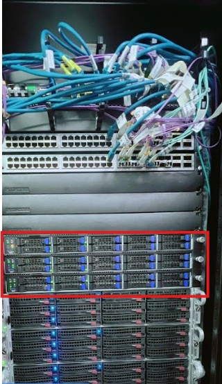
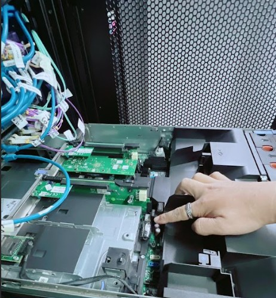
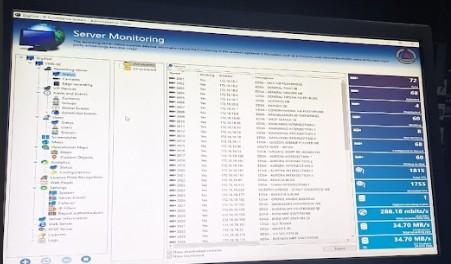
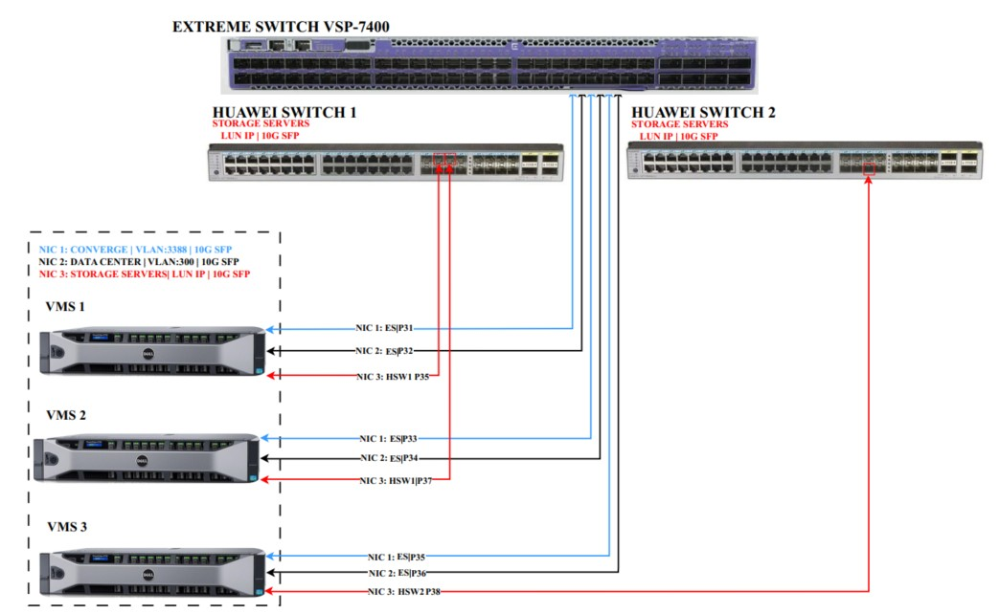
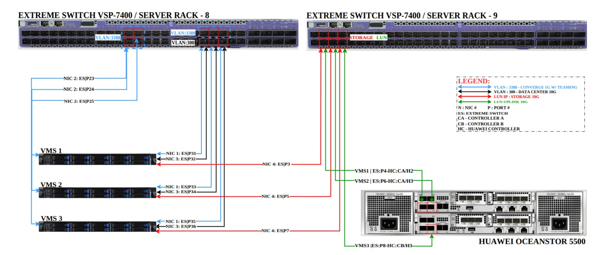
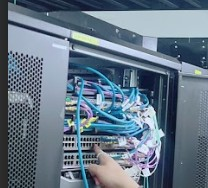

About Me
I specialize in network infrastructure, CCTV systems, and server migrations with hands-on experience in wide-scale deployments across the Philippines.
From few to zero-downtime VMS upgrades to complex network migrations, I deliver reliable solutions that scale.
Featured Projects
CCTV VMS Upgrade/Replacement
Government Client • Low-Downtime Migration



Upgraded Digifort servers, migrated databases/licenses, ensured zero downtime during production.
Huawei Switch Migration
Enterprise Network Transition



Migrated Huawei Switch infrastructure to Extreme Networks with full device reconfiguration.
Network Optimization & VPN Troubleshooting
Performance Stabilization
📈
Diagnosed WAN fluctuations
Reduced latency by 40%
🔒
Stabilized VPN tunnels
99.9% uptime achieved
Technical Expertise
🌐 Networking
- WAN/LAN Configuration
- VLAN & VPN Setup
- Switch/Router Migration
📹 CCTV Systems
- Digifort VMS
- IP Camera Integration
- Server Clustering
🛠️ Systems
- Server Migration
- Database Backup/Restore
- Performance Optimization
Let's Connect
📍 Location
Philippines • Available for onsite/remote
💼 Availability
Full-time • Part-time • Contract • Consulting